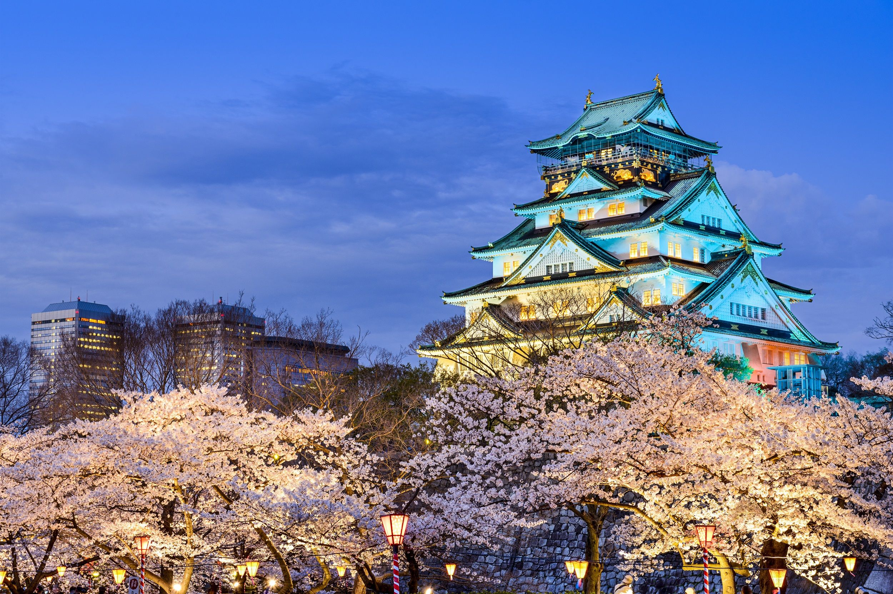

5 Iconic Japanese Castles
01. Himeji Castle, Hyogo Prefecture

"White Heron Castle"
Castle of the White Heron," Himeji Castle is a 700-year-old Japanese UNESCO World Heritage Site. It was first constructed in the early 1300s and has experienced multiple additions and renovations. The haunting Okiku's Well, influenced by the folktale Bancho Sarayashiki, is also located within the castle. During winter nights, the castle presents a lighting event.
02. Osaka Castle, Osaka Prefecture
"Golden Castle"
During the Sengoku period, Osaka Castle was a well-known monument. The Tokugawa Clan took control of the castle in 1615, despite Toyotomi Hideyoshi's efforts to enlarge it. The five-story castle rests on cyclopean foundations and offers a 360-degree outlook.
03. Matsumoto Castle, Nagano Prefecture
"Crow Castle"
Toyotomi Hideyoshi constructed the black-walled Matsumoto Castle in the 16th century. Known as Karasu-jo, this building features a moon-viewing room, steep steps, and secret levels that showcase architecture from both war and peace.
04. Hirosaki Castle, Aomori Prefecture

"Flower Raft Castle"
Constructed in 1611, Hirosaki Castle features a tiered keep and is popular during the spring sakura season with over 2,600 cherry trees surrounding it.
05. Matsue Castle, Shimane Prefecture
"Plover Castle"
Matsue Castle dates back to the 1600s and served as a center of authority under Tokugawa Ieyasu. It features gray roofs and black walls, and houses the Lafcadio Hearn Museum.